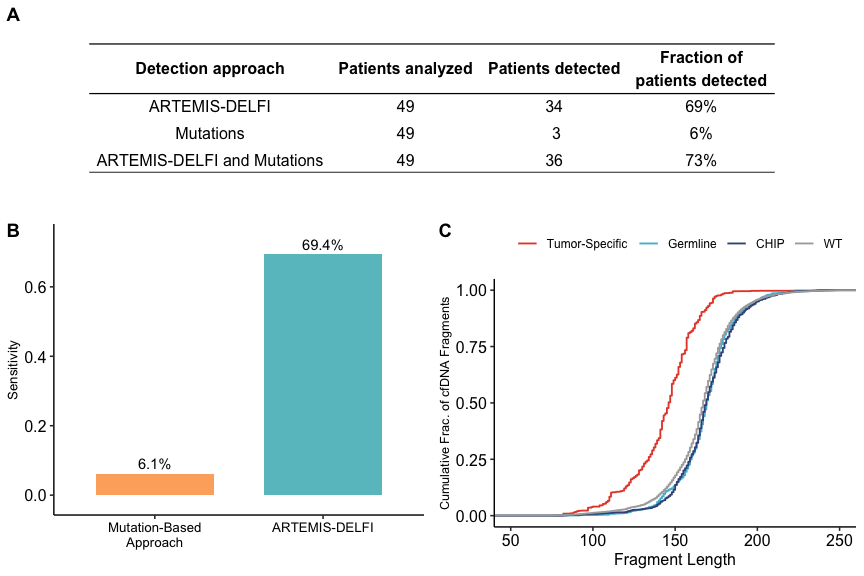

Last updated: 2025-05-25
Checks: 7 0
Knit directory:
reproduce_brain_wflow/analysis/
This reproducible R Markdown analysis was created with workflowr (version 1.7.0). The Checks tab describes the reproducibility checks that were applied when the results were created. The Past versions tab lists the development history.
Great! Since the R Markdown file has been committed to the Git repository, you know the exact version of the code that produced these results.
Great job! The global environment was empty. Objects defined in the global environment can affect the analysis in your R Markdown file in unknown ways. For reproduciblity it’s best to always run the code in an empty environment.
The command set.seed(20240723) was run prior to running
the code in the R Markdown file. Setting a seed ensures that any results
that rely on randomness, e.g. subsampling or permutations, are
reproducible.
Great job! Recording the operating system, R version, and package versions is critical for reproducibility.
Nice! There were no cached chunks for this analysis, so you can be confident that you successfully produced the results during this run.
Great job! Using relative paths to the files within your workflowr project makes it easier to run your code on other machines.
Great! You are using Git for version control. Tracking code development and connecting the code version to the results is critical for reproducibility.
The results in this page were generated with repository version 0358fb5. See the Past versions tab to see a history of the changes made to the R Markdown and HTML files.
Note that you need to be careful to ensure that all relevant files for
the analysis have been committed to Git prior to generating the results
(you can use wflow_publish or
wflow_git_commit). workflowr only checks the R Markdown
file, but you know if there are other scripts or data files that it
depends on. Below is the status of the Git repository when the results
were generated:
Ignored files:
Ignored: .DS_Store
Ignored: .Rhistory
Ignored: .Rproj.user/
Ignored: analysis/.DS_Store
Ignored: data/.DS_Store
Ignored: renv/library/
Untracked files:
Untracked: analysis/Figure4.md
Untracked: analysis/FigureS10.Rmd
Untracked: analysis/archive/
Unstaged changes:
Modified: analysis/index.Rmd
Note that any generated files, e.g. HTML, png, CSS, etc., are not included in this status report because it is ok for generated content to have uncommitted changes.
These are the previous versions of the repository in which changes were
made to the R Markdown (analysis/Figure4.Rmd) and HTML
(docs/Figure4.html) files. If you’ve configured a remote
Git repository (see ?wflow_git_remote), click on the
hyperlinks in the table below to view the files as they were in that
past version.
| File | Version | Author | Date | Message |
|---|---|---|---|---|
| Rmd | e26c87d | Noushin Niknafs | 2025-05-23 | adding the updated MAF figure |
| Rmd | 0efeb03 | Noushin Niknafs | 2024-09-09 | Adding Analysis Scripts |
library(tidyverse)
library(ggplot2)
library(ggfortify)
library(RColorBrewer)
library(ggpubr)
library(ggforce)
library(reshape2)
library(data.table)
library(pROC)
library(cowplot)
library(here)
library(grid)
library(gridExtra)
library(gtable)load(here('output', '01-rbrain', 'metadata.rda'))
load(here('output', '01-rbrain', 'plasma_maf.rda'))
load(here('output', '02-artemis-delfi', 'scores.rda'))
training.ids = metadata %>% filter(training == TRUE) %>% pull(alternate_id)
heldout.ids = metadata %>% filter(heldout == TRUE) %>% pull(alternate_id)
validation.ids = metadata %>% filter(validation == TRUE) %>% pull(alternate_id)
base = merge(metadata, scores, by.x = 'alternate_id', by.y = 'id', all.x = TRUE)
base = base %>% separate('alternate_id', into = c('id', 'suffix'), sep = '_', remove = FALSE)
pd = merge(plasma_maf, base, by = 'id', all.x = TRUE)
pd = pd %>% mutate(maf.log = (log10(maf)+6) / 6)
# These thresholds are determined by specificity analysis on the
# training set from the discovery cohort (Please see Figure2.Rmd).
thresholds = list(`0.90` = 0.304, `0.95` = 0.429)lowest = pd %>%
filter(maf.log != 0) %>%
group_by(id) %>%
summarize(maf.log = min(maf.log), artemis.delfi = unique(artemis.delfi)) %>%
ungroup() %>%
data.frame()
ids = unique(pd$id)
pos.ids = pd %>% arrange(artemis.delfi) %>% filter(maf.log!= 0) %>% pull(id) %>% unique()
neg.ids = setdiff(ids, pos.ids)
pos.labels = pd %>%
filter(id %in% pos.ids) %>%
select(id, artemis.delfi, maf.log) %>%
group_by(id, artemis.delfi) %>% summarize(maf.log = max(maf.log) * 1.04) %>%
ungroup() %>%
data.frame()
pd$delfi.detected = ifelse(pd$artemis.delfi >= thresholds$`0.90`, 'ARTEMIS-DELFI+', 'ARTEMIS-DELFI-')
pd$mut.detected = ifelse(pd$maf.log != 0, 'Mut+', 'Mut-')
pd$cat = pd %>%
select(delfi.detected, mut.detected) %>%
unite('cat', delfi.detected:mut.detected, sep = ',') %>%
pull(cat)
pd$cat = factor(pd$cat,
levels = c('ARTEMIS-DELFI+,Mut-', 'ARTEMIS-DELFI+,Mut+',
'ARTEMIS-DELFI-,Mut-', 'ARTEMIS-DELFI-,Mut+'))
cols = setNames(c('#67c1c7', '#6a51a3', '#aaaaaa', '#fdae6b'), levels(pd$cat))
set.seed(1)
g = ggplot(pd) +
annotate('segment', y = thresholds$`0.90` , yend = thresholds$`0.90`, x = 0, xend = Inf, color = '#67c1c7', linetype = 'solid', linewidth =0.2) +
annotate('segment', x = 0.02 , xend = 0.02, y = 0, yend = Inf, color = '#555555', linetype = 'solid', linewidth =0.2) +
annotate('text', y = thresholds$`0.90` + 0.01 , x = 1.27, label = 'Spec\n90%', size = 2.5) +
geom_point(data = pd, aes(y = artemis.delfi, x = maf.log, shape = method, color = cat), size = 3, alpha =0.7) +
geom_segment(data = lowest, aes(y = artemis.delfi, yend = artemis.delfi , x = maf.log), xend = 0, color = 'grey', linetype = 'dotted', linewidth = 0.5, show.legend = FALSE) +
geom_text(data = pos.labels, aes(y = artemis.delfi, x = maf.log, label = id), color = 'darkgrey', size= 3, angle = 0, hjust = 0, show.legend = FALSE) +
scale_x_continuous(labels = function(x) gsub('1e-06', '<LOD', formatC(10^(6 * x - 6), digits = 2)), breaks = c(0, 0.5, 0.67, 0.783, 1, 1.1), limits= c(-0.02, 1.7)) +
scale_y_continuous(limits= c(0,1), expand = c(0,0), breaks = seq(0,4) * 0.25) +
scale_shape_manual(name = 'Analysis Type', values = c(16, 18) ) +
theme_classic() +
theme(legend.position = c(0.5, 0.57), axis.text = element_text(color = 'black'), legend.title = element_text(size= 8), legend.text = element_text(size = 9), legend.background = element_rect(fill = NA, color = NA)) +
scale_color_manual(values = cols, name = 'Detection') +
labs(y = 'ARTEMIS-DELFI Score', x = 'MAF (%)')
g = g + theme(legend.position = c(0.73, 0.46 ), legend.text = element_text(size = 6), legend.box.background = element_rect(color = 'black', linewidth = 0.3), legend.spacing.y = unit(0, 'cm'), legend.key.height = unit(0.18, 'cm'))
part.a = gbase = pd %>% filter(method == 'Targeted Sequencing')
scores = base %>% select(id, artemis.delfi) %>% unique()
# calculate the sensitivity at 90% spec
# thresholds are: 90% spec (0.281), 95% spec (0.45)
sens.95 = (scores %>% filter(artemis.delfi >= thresholds$`0.95`) %>% nrow()) / (scores %>% nrow())
sens.90 = (scores %>% filter(artemis.delfi >= thresholds$`0.90`) %>% nrow()) / (scores %>% nrow())
sens.mut = (base %>% filter(maf > 1e-6) %>% pull(id) %>% unique() %>% length()) / (base %>% pull(id) %>% unique() %>% length())
#plot.data = data.frame(source = c('ARTEMIS-DELFI\n(Spec 95%)', 'ARTEMIS-DELFI\n(Spec 90%)', 'Mutation-Based\nApproach'),
# values = c(sens.95, sens.90, sens.mut))
#plot.data$label = paste(round(plot.data$values * 100, digits = 1), '%', sep = '')
plot.data = data.frame(source = c( 'ARTEMIS-DELFI', 'Mutation-Based\nApproach'),
values = c( sens.90, sens.mut))
plot.data$label = paste(round(plot.data$values * 100, digits = 1), '%', sep = '')
plot.data$source = factor(plot.data$source, levels = rev(c('ARTEMIS-DELFI', 'Mutation-Based\nApproach')))
cols = c('#67c1c7', '#fdae6b')
names(cols) = plot.data$source
set.seed(1)
p2 = ggplot(plot.data %>% filter(! grepl('95', source)), aes(x = source, y = values, fill = source)) +
geom_bar(stat = 'identity', width = 0.7)+
theme_pubr() +
geom_text(aes(x = source, y = values + 0.03, label = label)) +
scale_y_continuous(expand = c(0.01,0.05)) +
scale_fill_manual(values = cols, name = '', guide = NULL) +
theme(legend.position = 'none', axis.text.x = element_text(size= 10), axis.title.y = element_text(size = 10)) + labs(y = 'Sensitivity', x = '')
part.c = p2a = pd %>%
filter(method == "Targeted Sequencing") %>%
select(id, , artemis.delfi, delfi.detected, mut.detected, cat) %>%
unique() %>%
mutate(label = gsub(' ', '', paste(id, "(", round(artemis.delfi, 2), ")")))
stats = data.table(`Detection approach` = c('ARTEMIS-DELFI', 'Mutations', 'ARTEMIS-DELFI and Mutations'),
`Patients analyzed` = rep(nrow(a), 3),
`Patients detected` = c(length(which(a$delfi.detected == 'ARTEMIS-DELFI+')),
length(which(a$mut.detected == 'Mut+')),
length(which(a$mut.detected == 'Mut+' | a$delfi.detected == 'ARTEMIS-DELFI+')))) %>%
mutate(`Fraction of\npatients detected` = paste0(round(`Patients detected` / `Patients analyzed` * 100, 0), '%'))
tt3 <- gridExtra::ttheme_minimal(
colhead=list(fg_params=list(col="black", fontface=2L)))
part.b = gridExtra::tableGrob(stats, rows = NULL, theme = tt3)
part.b = gtable_add_grob(part.b, t = 1, b = 1, l = 1, r = 4,
grobs = linesGrob(x = unit(c(0, 1), 'npc'), y = unit(c(1,1), 'npc'), gp = gpar(fill = NA, lwd = 2.5)))
part.b = gtable_add_grob(part.b, t = 2, b = 2, l = 1, r = 4,
grobs = linesGrob(x = unit(c(0, 1), 'npc'), y = unit(c(1,1), 'npc'), gp = gpar(fill = NA, lwd = 2.5)))
part.b = gtable_add_grob(part.b, t = 4, b = 4, l = 1, r = 4,
grobs = linesGrob(x = unit(c(0, 1), 'npc'), y = unit(c(0.01,0.01), 'npc'), gp = gpar(fill = NA, lwd = 1.25)))
part.b = part.b %>% as_ggplot()s = readRDS(here('data', '03-targeted-sequencing', 'fragment_lengths.rds'))
TS.list = list(CGCNS67P_2 = c("ACVR1B:T206I", "CD79B:R114Q", "CSF1R:R378H" , "SETD2:R1826C", "ERBB3:n/a", "FGF10:N147D", "PIK3C2B:K1415*","TP53:R248W"),
CGCNS118P_2 = c("EGFR:A289V"),
CGCNS133P_2 = 'EGFR:R108K')
GL.list = list(CGCNS36P_2 = 'BRCA1:M1361L',
CGCNS23P_2 = 'BRCA2:S976I')
CHIP.list = list(CGCNS72P_2 = 'TET2:n/a',
CGCNS124P_2 = 'TET2:C1642*',
CGCNS42P_2 = 'DNMT3B:L489F',
CGCNS74P_2 = c('TET2:R1214G', 'TET2:Q1445*'),
CGCNS124P_2 = 'TET2:C1642*',
CGCNS29P_2 = 'RUNX1:D30N')
ts.mut = lapply(names(TS.list), function(x) unlist(lapply(TS.list[[x]], function(y) s[[x]][[y]]$mut))) %>% unlist()
ts.wt = lapply(names(TS.list), function(x) unlist(lapply(TS.list[[x]], function(y) s[[x]][[y]]$wt))) %>% unlist()
gl.mut = lapply(names(GL.list), function(x) unlist(lapply(GL.list[[x]], function(y) s[[x]][[y]]$mut))) %>% unlist()
gl.wt = lapply(names(GL.list), function(x) unlist(lapply(GL.list[[x]], function(y) s[[x]][[y]]$wt))) %>% unlist()
chip.mut = lapply(names(CHIP.list), function(x) unlist(lapply(CHIP.list[[x]], function(y) s[[x]][[y]]$mut))) %>% unlist()
chip.wt = lapply(names(CHIP.list), function(x) unlist(lapply(CHIP.list[[x]], function(y) s[[x]][[y]]$wt))) %>% unlist()
pd = data.frame(value = c(ts.mut, ts.wt, gl.mut, gl.wt, chip.mut, chip.wt),
origin = c(rep('Tumor-Specific', length(ts.mut) + length(ts.wt)),
rep('Germline', length(gl.mut) + length(gl.wt)),
rep('CHIP', length(chip.mut) + length(chip.wt))),
allele = c(rep('MUT', length(ts.mut)), rep('WT', length(ts.wt)), rep('MUT', length(gl.mut)), rep('WT', length(gl.wt)),
rep('MUT', length(chip.mut)), rep('WT', length(chip.wt))))
pd$origin = factor(pd$origin, levels = c('Tumor-Specific', 'Germline', 'CHIP', 'WT'))
pd = pd %>% filter(value > 50 & value < 250)
pd[pd$allele == 'WT', 'origin'] = 'WT'
p4 = ggplot(pd , aes(x = value, color = origin)) +
stat_ecdf(linewidth = 0.65) +
coord_cartesian(xlim = c(50,250)) +
theme_pubr() +
labs(x = 'Fragment Length', y = 'Cumulative Frac. of cfDNA Fragments', color = '') +
scale_color_manual(values = c('#E64B35FF', '#4DBBD5FF', '#3C5488FF' ,'#aaaaaa')) +
theme(legend.text = element_text(size = 9), axis.title.y = element_text(size = 9.5))
part.d = p4panel = plot_grid(part.b, plot_grid(part.c, part.d, ncol = 2, labels = c('', 'C')), ncol = 1, labels = c('A', 'B'), rel_heights = c(0.75, 1.25))
plot(panel)
sessionInfo()R version 4.1.2 (2021-11-01)
Platform: x86_64-apple-darwin17.0 (64-bit)
Running under: macOS Big Sur 10.16
Matrix products: default
BLAS: /Library/Frameworks/R.framework/Versions/4.1/Resources/lib/libRblas.0.dylib
LAPACK: /Library/Frameworks/R.framework/Versions/4.1/Resources/lib/libRlapack.dylib
locale:
[1] en_US.UTF-8/en_US.UTF-8/en_US.UTF-8/C/en_US.UTF-8/en_US.UTF-8
attached base packages:
[1] grid stats graphics grDevices datasets utils methods
[8] base
other attached packages:
[1] gtable_0.3.0 gridExtra_2.3 here_1.0.1 cowplot_1.1.1
[5] pROC_1.18.0 data.table_1.14.2 reshape2_1.4.4 ggforce_0.3.3
[9] ggpubr_0.4.0 RColorBrewer_1.1-3 ggfortify_0.4.14 forcats_0.5.1
[13] stringr_1.4.0 dplyr_1.0.9 purrr_0.3.4 readr_2.1.2
[17] tidyr_1.2.0 tibble_3.1.7 ggplot2_3.4.3 tidyverse_1.3.1
[21] workflowr_1.7.0
loaded via a namespace (and not attached):
[1] fs_1.5.2 lubridate_1.8.0 httr_1.4.2
[4] rprojroot_2.0.3 tools_4.1.2 backports_1.4.1
[7] bslib_0.3.1 utf8_1.2.2 R6_2.5.1
[10] DBI_1.1.2 colorspace_2.0-3 withr_2.5.0
[13] tidyselect_1.1.2 processx_3.5.3 compiler_4.1.2
[16] git2r_0.30.1 cli_3.6.1 rvest_1.0.2
[19] xml2_1.3.3 labeling_0.4.2 sass_0.4.1
[22] scales_1.2.1 callr_3.7.0 digest_0.6.29
[25] rmarkdown_2.13 pkgconfig_2.0.3 htmltools_0.5.2
[28] highr_0.11 dbplyr_2.1.1 fastmap_1.1.0
[31] rlang_1.1.1 readxl_1.4.0 rstudioapi_0.13
[34] jquerylib_0.1.4 generics_0.1.2 farver_2.1.0
[37] jsonlite_1.8.0 car_3.0-12 magrittr_2.0.3
[40] Rcpp_1.0.8.3 munsell_0.5.0 fansi_1.0.3
[43] abind_1.4-5 lifecycle_1.0.3 stringi_1.7.6
[46] whisker_0.4 yaml_2.3.5 carData_3.0-5
[49] MASS_7.3-54 plyr_1.8.7 promises_1.2.0.1
[52] crayon_1.5.1 haven_2.4.3 hms_1.1.1
[55] knitr_1.38 ps_1.6.0 pillar_1.7.0
[58] ggsignif_0.6.3 reprex_2.0.1 glue_1.6.2
[61] evaluate_0.15 getPass_0.2-2 renv_0.15.5
[64] BiocManager_1.30.16 modelr_0.1.8 vctrs_0.6.2
[67] tzdb_0.3.0 tweenr_1.0.2 httpuv_1.6.5
[70] cellranger_1.1.0 polyclip_1.10-0 assertthat_0.2.1
[73] xfun_0.39 broom_0.7.12 rstatix_0.7.0
[76] later_1.3.0 ellipsis_0.3.2